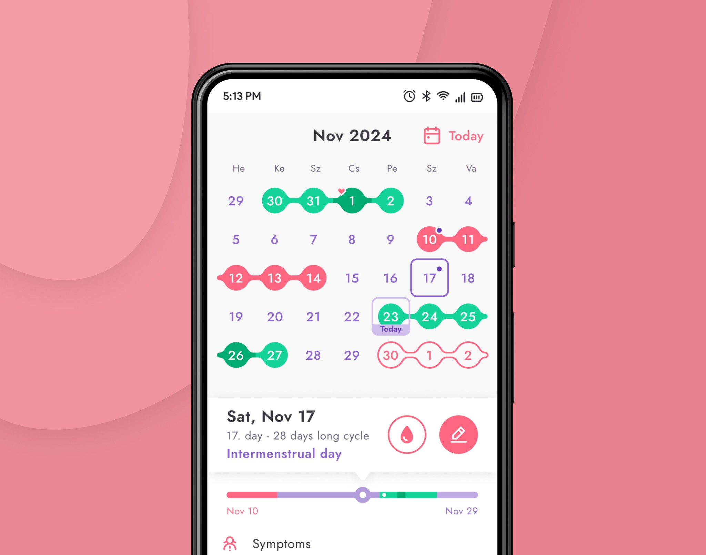
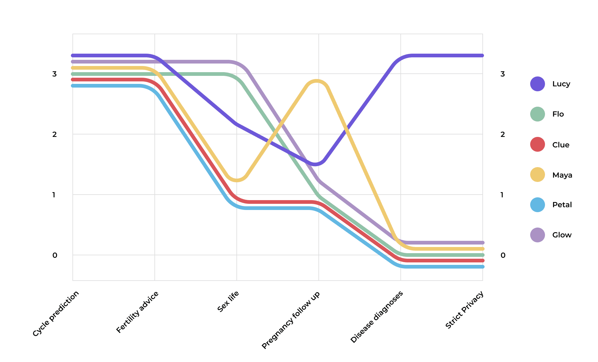
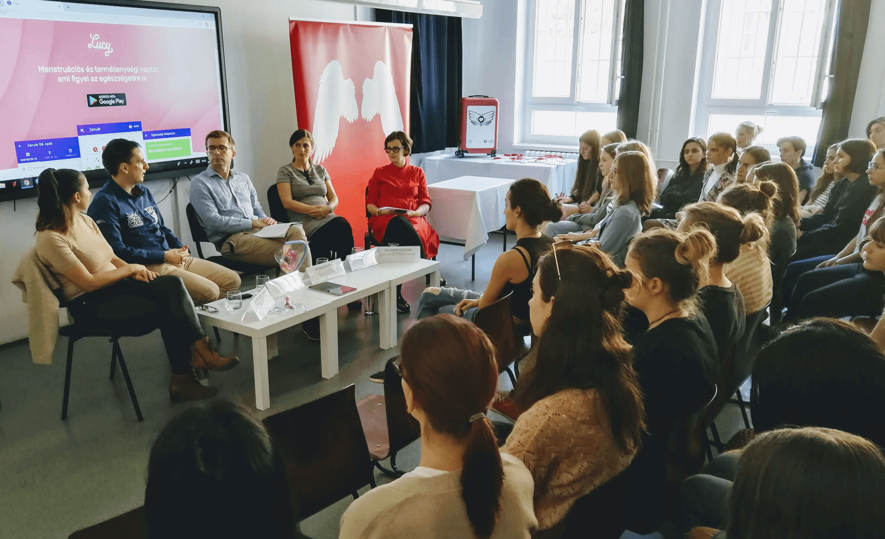
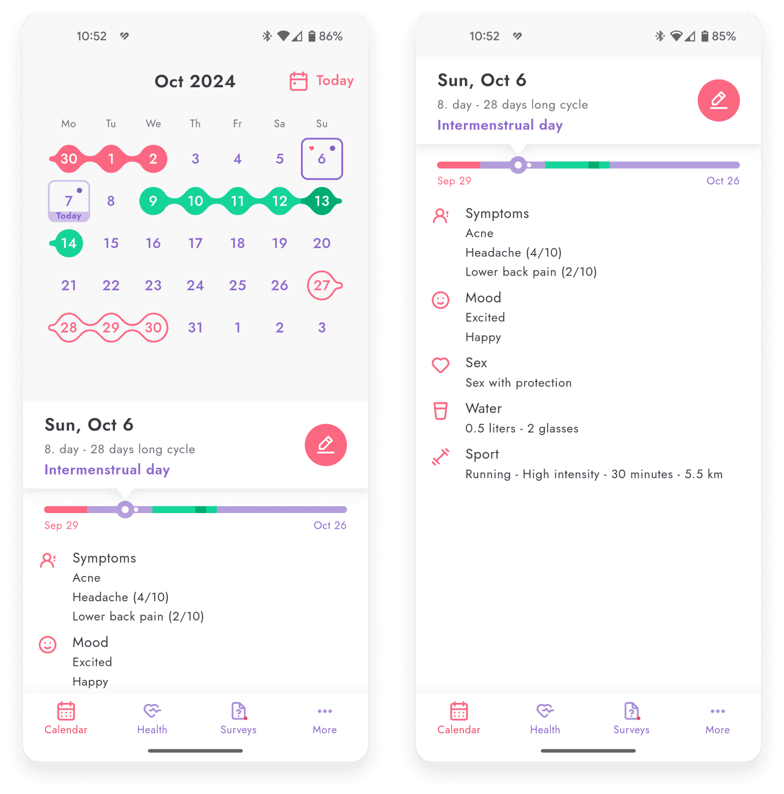
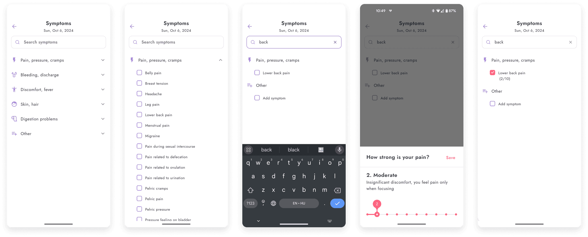
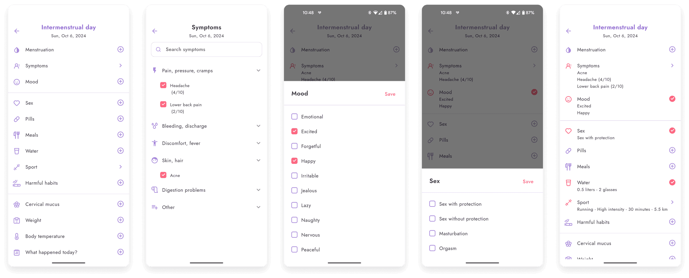
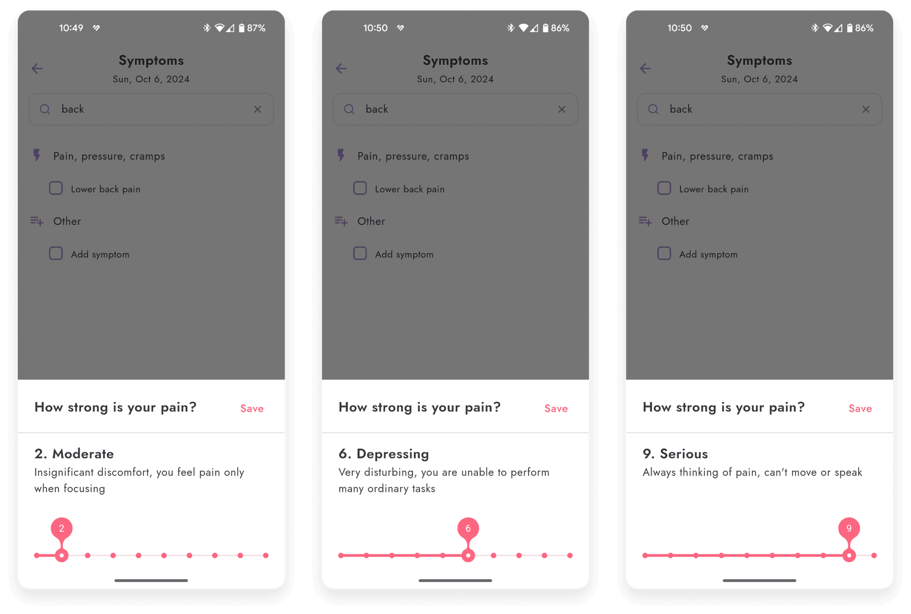
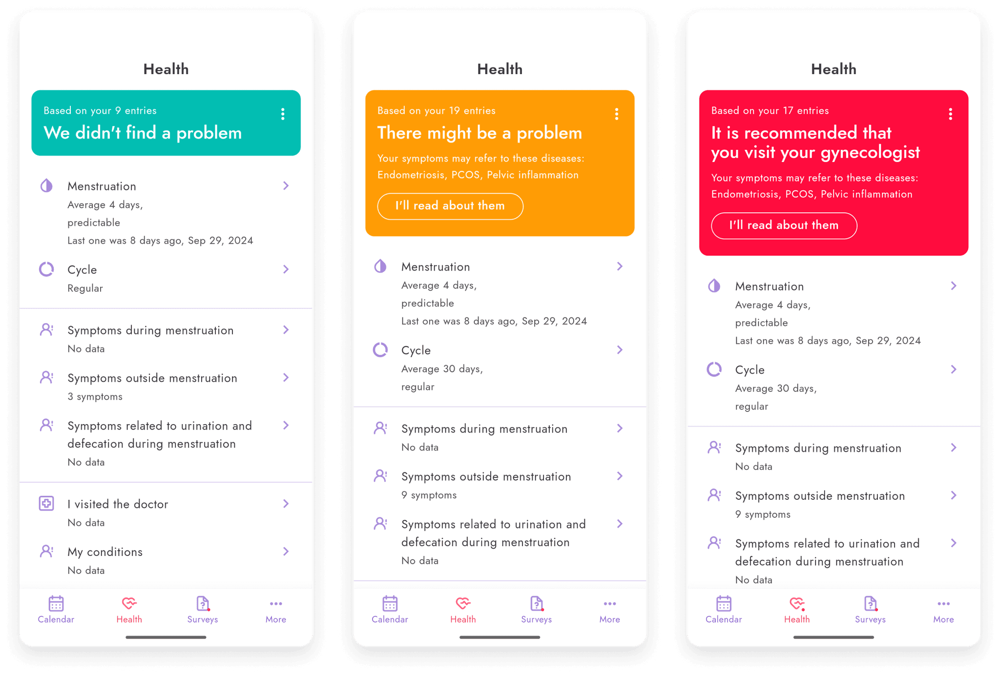
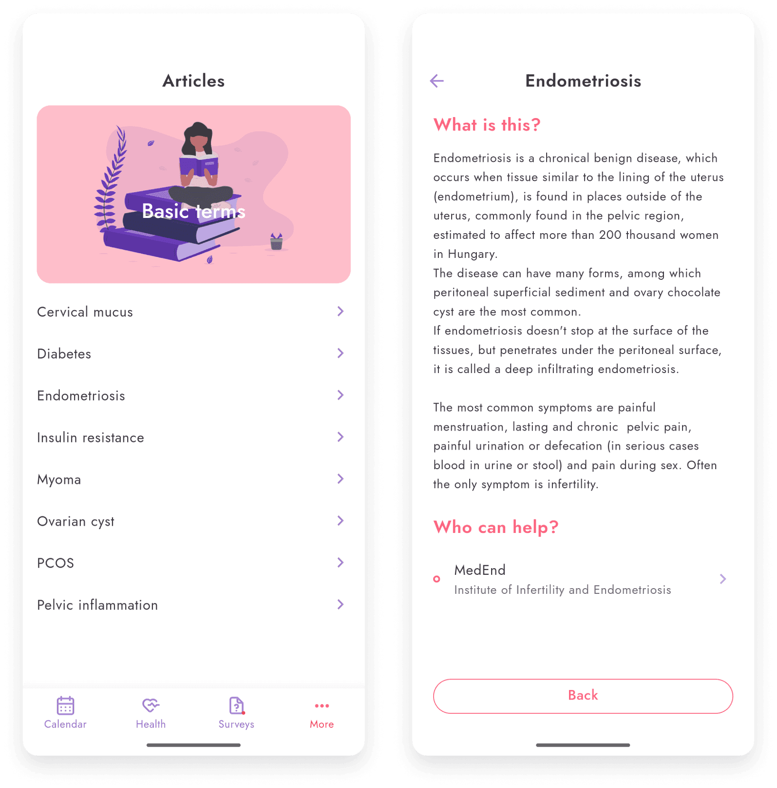

Reducing gynecological diagnosis times

Lucy is a period and ovulation calendar with gynecological problem detection. The application is available at hellolucy.app for Android and iOS.
The challenge
1 in 10 women is affected by a severe gynecological condition such as endometriosis or PCOS. That’s 190 million people worldwide. These diseases sharply reduce quality of life and can cause infertility. The average time to diagnosis is four years in Hungary, seven years in Germany, eight years in the UK and nine years in the US. This is because there is no medical test for these problems. Only a surgical procedure can confirm the condition, usually at a late stage when the patient already has acute symptoms. There are weaker signs in the earlier stage, which are often ignored, mistreated, or not recognized. Surgery could detect the problem in time… but who would undergo surgery just to find out?
We wanted to catch the problem in the early stage with symptom analysis. That’s why we created a period calendar from a medical perspective. The symptoms are more specific, and they are in line with gynecological practice. There is no other app on the market targeting this issue. All other apps focus only on fertility or period prediction, without any medical conclusion.

My role and the scope
Our team is made up of an Android developer, a medical advisor, a marketing manager and me as the product designer. We started to work on Lucy in 2018.
A typical journey from suffering to treated problem
We did a lot of interviews with women with endometriosis, PCOS, and other types of diseases to find out the standard stages, challenges, and motivations.
"I visited doctors with my constant stomach problems and painful menstruation for eight years, but they couldn’t help me. One of my friends asked if I have endometriosis. She recommended a specialist. She was right. After the treatment, my symptoms were gone after eight years of suffering."
"My partner and I wanted a baby for so long, but I couldn’t conceive although we tried a lot of treatments. Finally, we broke up. I was devastated. After several years it turned out I have endometriosis. The surgery and the therapy helped me, and eventually, I got pregnant with my new partner."
"I thought having painful menstruation was a question of luck. I thought I was just unlucky, and it’s healthy to lie on the ground in the fetal position in pain. Some friends said they had similar problems. Nobody told me it’s not healthy."
We aimed to detect the problem in the early stage, before any surgery or having severe symptoms like infertility or unbearable pain. Logging and analyzing daily logs of symptoms can have a tremendous effect on early discovery.
After the diagnosis, education is another crucial point. We can provide medically correct disease descriptions to prevent reading horror stories on the internet in the research stage.
Lucy can help in the treatment stage with logging pill taking and other activities. It helps the cooperation with the gynecologist and increases the effectiveness of the treatment.

Closed group testing with MVP
Testing a prototype and real-life usage can be very different, especially if we design a tool that is used every day. So we decided to go for a minimal logging tool without any diagnostic function, where we can learn from data entries and user feedback. We developed a basic Android app for this.
Scannable list of days and notes to help plan life and activities
"I don’t want to go on holiday when I have my period. I need to see well ahead these days."
I designed a conventional calendar and a list view to solve this problem. Each has its pros and cons, so we decided to keep them both until we have more data about their real-life usage. We ended up keeping the conventional calendar view.

Finding out what users want to log
We added a set of grouped symptoms, plus a free-text field. This showed us what users missed in the app, and what they couldn’t find in the list and typed in instead. Based on their input, we added new symptoms and arranged the symptoms in alphabetical order. We also made it easy to find any symptom using the search function.

Adding relevant daily notes fast
We collected the most popular note types from our users and studied our competitors.

Reducing subjectivity in pain levels for more comprehensible data for diagnosis
Pain levels are important indicators of potential problems. Users have to define their pain level when they add a symptom with pain. But pain is a very subjective topic.
I researched the topic of how to define pain levels and what the medically approved systems in use are. We created a unique slider for this input.
Giving a name and examples to a specific pain level from 1 to 10 helped our users define their state more objectively and set the correct level.
"Setting the pain level is very easy now. I never knew what these numbers meant."

Helping the diagnosis process and warning carefully if the user can have a potential problem
I interviewed gynecologists to find out what the most important indicators of potential problems are. I designed the Health summary page showing only the relevant information to speed up the diagnosis time.
Besides helping the diagnosis process, we want to help the medical research. We collect and analyze anonymous data to find new connections and create a better diagnosis method.
When Lucy flags a potential medical problem in a user’s data, we have to be careful not to scare them or sound like a diagnosis, because legally Lucy can’t make one. We worked with doctors to find the right message and tested it with users.

Preventing misinformation and helping users find a specialist
User interviews revealed that after learning the diagnosis, people turn to the internet and read all kinds of stories about their condition. They become scared and desperate, as shown above on the user journey. We want to prevent this state. If Lucy suggests a potential risk of a disease, she also shows reliable information about it and a relevant specialist.
